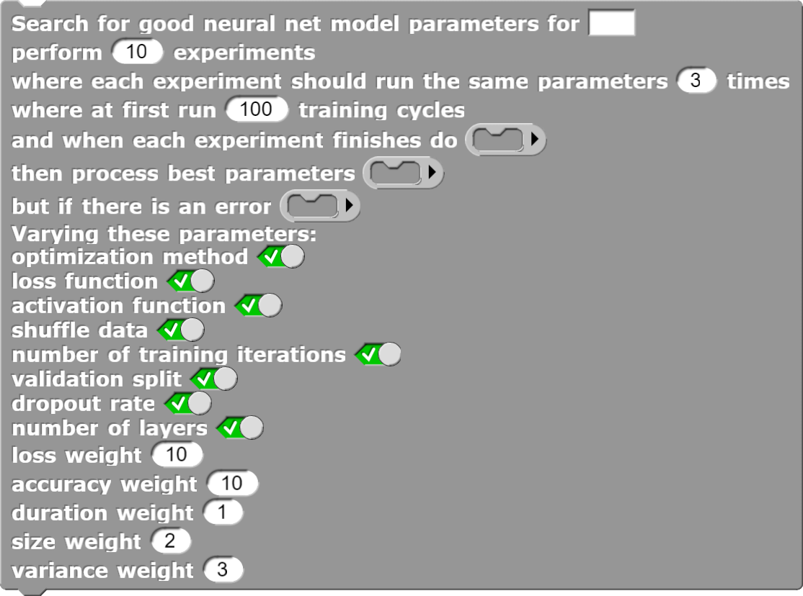

There are two Snap! blocks for searching for a good architecture and choices for training methods and parameters.
The full-featured version looks like:

The full-featured blocks for searching for a good deep learning model/figcaption>
The block repeatedly makes a copy of the current model with random changes.
It keeps track of the one with the best score.
When it completes you can either use the best parameters found in your model and its training or
use the replace model named ... block to change the current model
to the best one found.
There are many parameters for controlling what parameters are changed during the search:
Number of experiments.
This controls how many times a new model is created and trained.
Number of samples.
This controls how many times each experiment is repeated.
Due to the random initial weights in the neural network the exact same parameters can produce different results.
The scores of each sample are averaged.
Initial number of training cycles.
This controls how many learning steps to take for each experiment.
Note that this is a parameter that can be changed during search by default.
Optimization method.
The optimization method controls how weights are adjusted during training.
For more information see this Wikipedia article.
Loss function.
This is used during training to determine how to improve the neural net's weights.
Note for categorical training (i.e. labelling things) the system picks the best one so no need to
for it to consider variants.
Activation function.
This is a function that is applied to the output of each artificial neuron.
Relu is often the best.
Read this Wikipedia article to learn more.
Shuffle data.
If true, the data is re-ordered after each training cycle.
Number of training cycles.
If enabled, the search will explore different numbers of training steps.
Validation split.
If enabled, the search will explore different fractions to split the data for training and for validation
(and evaluation).
Note that if instead validation data has been sent
using the send validation data ... block.
Dropout rate.
The dropout rate controls what fraction of the inputs to each artificial neuron are "dropped"
(i.e. treated as zero).
This helps prevent the model learning aspects of the data that specific to the training set.
It helps make the model be more general.
Number of layers.
If enabled, the search will consider both deeper and shallower models.
It will also explore wider and narrower layers.
The search needs to determine if one model variant is better than another.
The following parameters control how different metrics are weighed.
Loss weight.
For non-categorical models this is typically the most important measure.
The search algorithm uses the negative log of the validation loss.
Accuracy.
Only applies to categorical models and measures the fraction of times the model gave the right
label to elements of the validation dataset.
Duration of training.
All else being equal we prefer models that train quickly.
The search algorithm uses the negative log of the duration.
Size of model
Larger model take longer to load and to generate predictions.
The negative log of the number of parameters is used by the algorithm.
Standard deviation of the score
If the number of samples is greater than one the results of training a model
with the same hyperparameters can differ. A good set of parameter values should consistently produce good results.
The negative of the standard deviation is used to penalize parameters that lead to a range of outcomes.